A net force causes an object to accelerate in the direction of the net force. The acceleration of the object is directly proportional to the net force acting on it and inversely proportional to its mass.
Newton’s Second Law of motion can be written as:
The acceleration a and the net force F are in the same direction.
F = ma
Mass and weight
Comparison of mass and weight:
Mass
Weight
Inertia of an object
Gravitational force the object experiences
Scalar
Vector
SI unit: kg
SI unit: N
Same at all places
W = mg, depends on the acceleration due to gravity g, e.g. gMoon is one sixth of gEarth, so the weight on the Moon is one sixth of the weight on Earth.
Forces involved in various kinds of motion:
Motion of the object
Force and acceleration
Moving along a horizontal surface
• Weight and normal reaction offsets each other (R = mg).
• a = F – fm
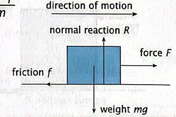
DSE 2013 (Paper 1A) Q7Exam Q3(b)–(d)
Moving along an inclined plane
• Resolve the weight into a component parallel to the plane (mg sin θ) and a component perpendicular to the plane (mg cos θ).
• The perpendicular component and the normal reaction (R = mg cos θ) cancel each other.
The centre of gravity of an object is the point where all the weight of the object can be considered to be concentrated.
The moment of force would be the same if the entire weight acted through the centre of gravity instead of acting through the individual masses.
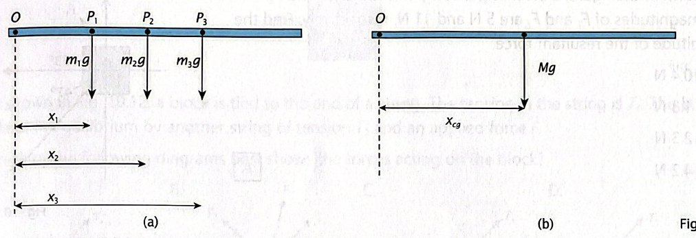
Fig. 10.7
If m₁, m₂, m₃ ... are the point masses of P₁, P₂, P₃ ... of an object of mass M, respectively, the location of the centre of gravity xcg can be found by the following equation:
The centre of gravity of a uniform rod lies at its mid-point.
The centre of gravity of a uniform right triangle is shown as follows:
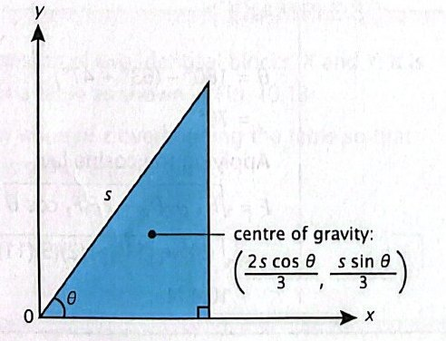
Fig. 10.10
Worked Examples
Example 1
As shown in the figure, a block is pulled by two forces F₁ and F₂. The magnitudes of F₁ and F₂ are 5 N and 11 N, respectively. Find the magnitude of the resultant force.
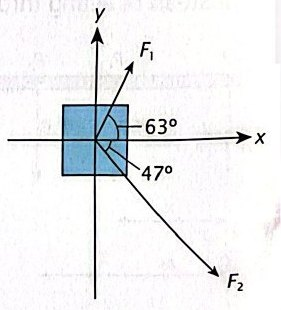
Fig. 10.11
A. 10.4 NB. 11.8 NC. 12.3 ND. 14.2 N
Answer: A
SOLUTION
This question can be solved by two different ways:
General approach
To add up forces, first resolve each one into the x-component and y-component. The x-component (y-component) of the resultant is the sum of all x-components (y-components).
The magnitude of the resultant of two forces which are neither parallel nor perpendicular can be found by the cosine law (a² = b² + c² – 2bc cos θ). Shift one of the forces so that the two forces and their resultant form a triangle.
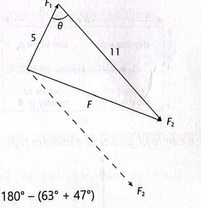
θ = 180° – (63° + 47°)= 70°
Applying the cosine law,
F = √(F₁² + F₂² – 2F₁F₂ cos θ)= √((5)² + (11)² – (2)(5)(11)cos 70°)= 10.4 N
Example 2
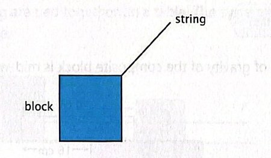
Fig. 10.12
As shown in Fig. 10.12, a block is tied to the end of a string. The tension in the string is T₁. The block is kept in equilibrium by another string of tension T₂ and an applied force F.
Which of the following diagrams best shows the forces acting on the block?
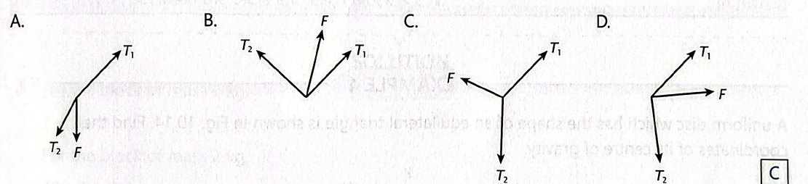
Answer: C
SOLUTION
Problem solving by drawing
Since the block is in equilibrium, the net force acting on the block is zero.
When the resultant of forces is zero, the vectors representing the forces form a closed polygon upon shifting. The vectors in C can be shifted as shown to form a triangle.
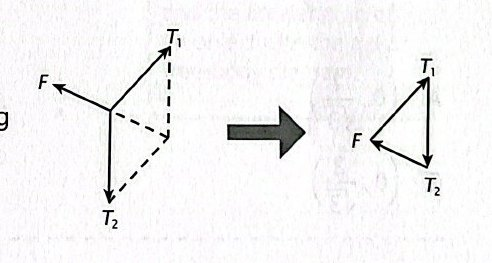
Hence, C best shows the forces acting on the block.
Example 3
A composite block consists of two identical blocks, X and Y. It is placed on the edge of a table as shown in Fig. 10.13.
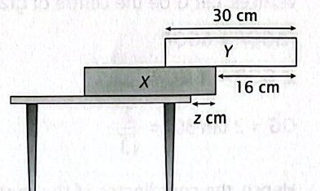
Fig. 10.13
What is the maximum value of z overhanging the table so that the composite block is still in equilibrium?
A. 2 cmB. 7 cmC. 14 cmD. 23 cm
Answer: B
SOLUTION
Symmetric analysis
By symmetry, the centre of gravity of the composite block is mid-way between P and Q, i.e. 7 cm from Q.
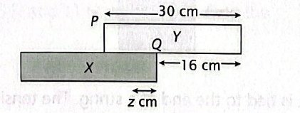
Maximum value of z is therefore 7 cm.
Example 4
A uniform disc which has the shape of an equilateral triangle is shown in Fig. 10.14. Find the coordinates of its centre of gravity.
By the reflection symmetry about the y-axis, the x-coordinate of the centre of gravity must be 0. Since the disc is an equilateral triangle, the centre of gravity should be equidistant from all three vertices. Let G be the centre of gravity.
ΔGQP ≅ ΔGQR∠GQP = ∠GQROG = 2 tan 30° = 2√3
Hence, the coordinates of the centre of gravity are (0, 2√3).
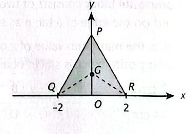
Example 5
Two blocks of masses 2 kg and 3 kg are tied together on a table. The system is pulled by a horizontal force of 15 N as shown in the figure.
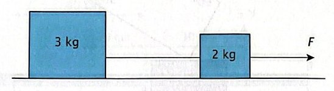
Fig. 10.15
Find the acceleration of the system and the tension in the string connecting the blocks if
(a) the table is smooth, and (4 marks)
(b) the friction between the table and each block is 2 N. (4 marks)
SOLUTION
(a) For the block of mass 3 kg,
T = 3a ......(1) 1
For the block of mass 2 kg,
15 – T = 2a ......(2) 1
By solving (1) and (2),
T = 9 N 1a = 3 m s–21
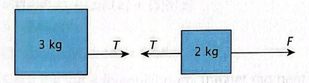
(b) For the block of mass 3 kg,
T – 2 = 3a ......(3) 1
For the block of mass 2 kg,
15 – T – 2 = 2a ......(4) 1
By solving (3) and (4),
T = 8.6 N 1a = 2.2 m s–21
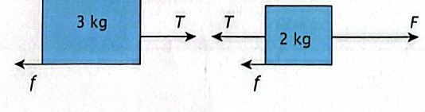
Example 6
An object of mass 10 kg is suspended by two strings as shown.
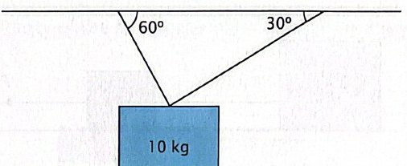
Fig. 10.16
(a) Draw a free-body diagram for the object. (2 marks)
(b) Find the tension in each string. (4 marks)
SOLUTION
(a)
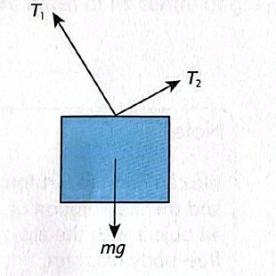
Correct tensions T₁ and T₂ 1
Correct weight mg1
(b) By resolving the forces into horizontal and vertical directions,
T₁ sin 30° = T₂ sin 60° ......(1) 1T₁ cos 30° + T₂ cos 60° = 10 × 9.81 ......(2) 1
By solving (1) and (2),
T₁ = 85.0 N 1T₂ = 49.1 N 1
Example 7
As shown in the figure, AB is a uniform light rod pivoted at O, its mid-point. The rod AB is in equilibrium.
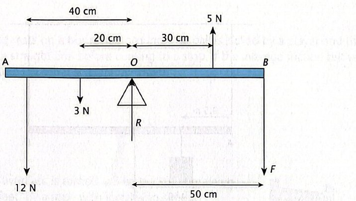
Fig. 10.17
(a) Find the magnitude of the force F. (4 marks)
(b) Find the magnitude of the reaction R at O. (4 marks)
SOLUTION
(a) Take moments about O.
Anti-clockwise moment
= (12)(0.4) + (3)(0.2) + (5)(0.3)= 6.9 N m 1
Clockwise moment = 0.5F1
Since the rod is in equilibrium, the net moment is zero.
∴ 0.5F = 6.9 1F = 13.8 N 1
(b) Take moments about B.
Anti-clockwise moments = (12)(0.9) + (3)(0.7)
= 12.9 N m 1
Clockwise moments = (5)(0.2) + 0.5R
= 1 + 0.5R1
Thus, 1 + 0.5R = 12.9 1
R = 23.8 N 1
Example 8
A uniform rod AB of weight 100 N and length 2 m is suspended by two vertical strings at its ends and carries a load of 20 kg as shown below. Determine the tension in each string. (6 marks)
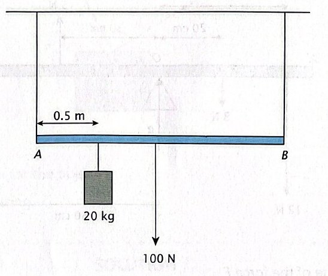
Fig. 10.18
SOLUTION
Let TA and TB be the tensions in the strings at A and B, respectively.
Take moments about B.
Anti-clockwise moment = (100)(1) + (20 × 9.81)(1.5)
= 394.3 N m 1
Clockwise moment = 2TA1
Since the rod is in equilibrium, the net moment is zero.
2TA = 394.3 1TA = 197.15 N 1
TA + TB = Sum of weights of the rod and the load
= 100 + (20)(9.81) 1TB = 99.05 N 1
Original scanned pages (sign in to view)
The original scanned pages are only available to signed-in students.